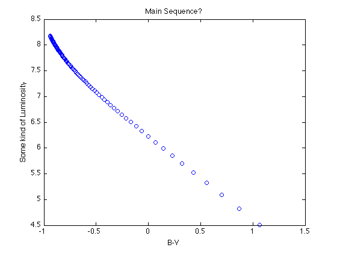

The Main Sequence
This is the reference that you can use to check your work. Some parts of the code are blocked (using ...) for you to figure out yourself.
You should have a vector of 20 different values of temperature:
temp = linspace(3000, 18000, 20);
Consider two SDSS filters, the green (4770 Angstroms) and the red (6231 Angstroms). We will not multiply by a wavelength band width, so our units will be incorrect, but the qualitative behavior of the plot will remain.
The frequencies of green and red bands are:
nu_g = 3e10 / 4.77e-5; nu_r = 3e10 / 6.231e-5;
The intensities in green and red bands are:
g = planck(nu_g,temp); r = planck(nu_r,temp);
The color index is roughly
gminusr = -log10(g./r);
If you did everything properly, your data points should look like the main sequence of the HR diagram.
figure(4); clf plot(gminusr,log10(r),'o') hold on xlabel('g-r (scales with reverse of temperature, i.e. increasing Temp to the left)'); ylabel('scale free effective measure of Luminosity') title('Main Sequence')